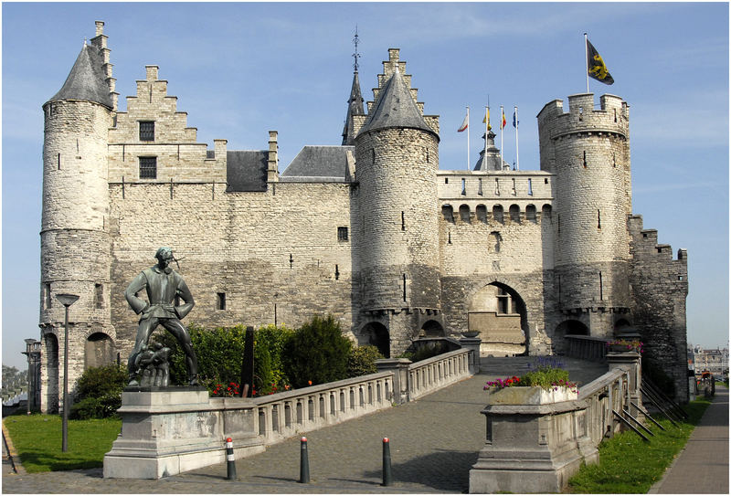
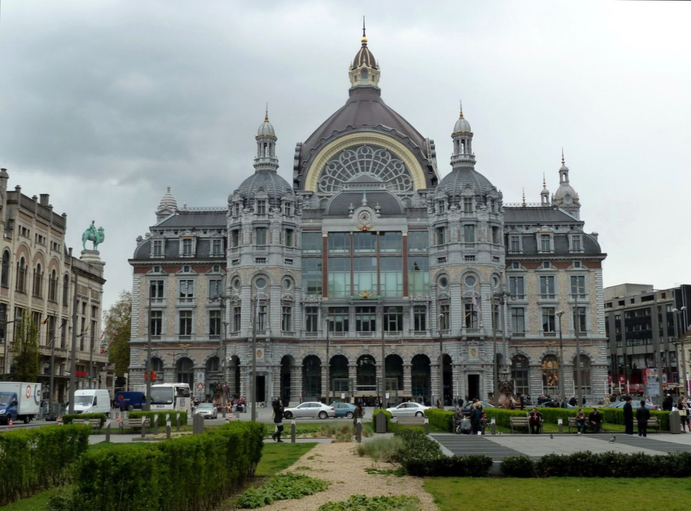
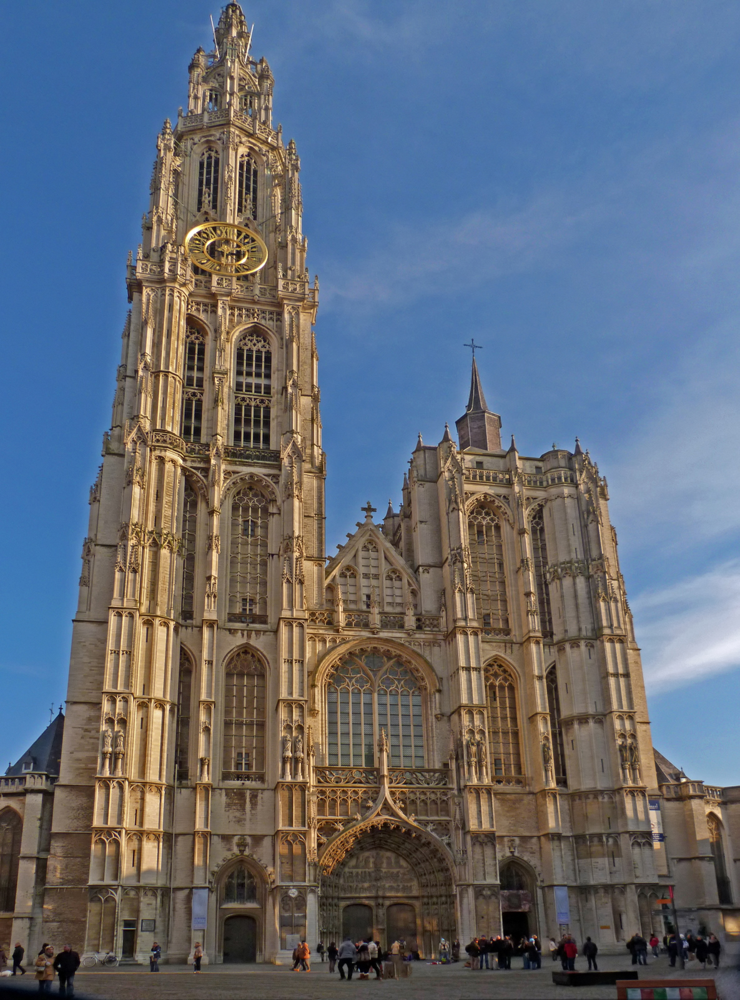
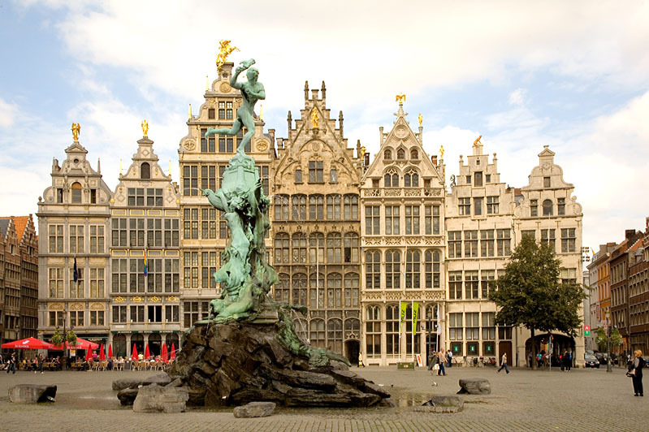
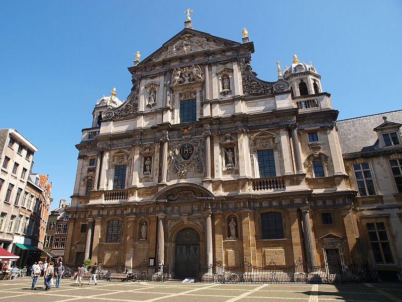
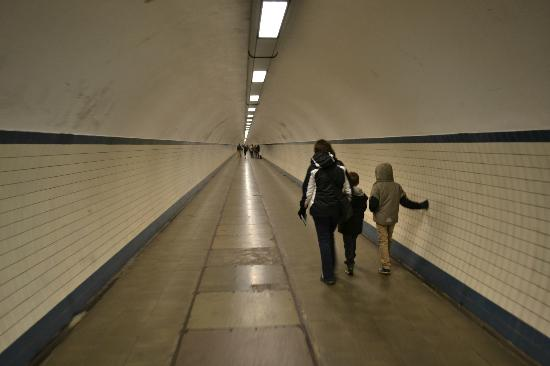

| Замок Стеен (Burg Steen) |
Антверпенская крепость Стеен была построена в ХIII веке. Крепость позволяла контролировать реку Схелду, на которой и была возведена. В период между 1303 и 1827 гг. использовалась в качестве тюрьмы. Большая часть крепости и множество старинных домов, включая старейшую церковь города, были снесены в XIX веке при спрямлении реки для борьбы с её обмелением. |
12:00-18:00 (ср-вс) |
?€ |
Steenplein 1, Antwerpen |
|
 |
| Вокзал Антверпен-Центральный (Antwerpen Centraal) |
В 2009 году Антверпен-Центральный занял четвёртое место в рейтинге самых красивых вокзалов мира. |
|
|
Koning Astrid Plein, Antwerpen |
|
 |
| Собор Антверпенской Богоматери (Cathedral of Our Lady) |
В настоящее время Собор Антверпенской Богоматери — главный кафедральный собор Антверпена, один из крупнейших храмов Римско-католической церкви. Собор издавна является символом города, памятником средневековой и готической культуры Является самым высоким собором в Бельгии, а также имеет самую высокую церковную башню Бенилюкса (123 метра). Собор Антверпенской Богоматери был заложен в 1352 году, и хотя первый этап был закончен в 1521 году, строительство собора по сей день считается «незавершённым». Спроектирован в готическом стиле архитекторами Жаном и Петером Амелями. Содержит ряд значительных работ известнейшего художника в стиле барокко Питера Пауля Рубенса, а также картины таких художников, как Отто ван Веен, Якоб де Бакер и Мартин де Вос. |
10:00-17:00(пн-пт) 10:00-15:00(cб) 13:00-16:00(вс) |
5€ |
Groenplaats 21, Antwerpen |
dekathedraal.be |
 |
| Grote Markt |
Ратуша на Гроте Маркт, возведенная в середине 16 века. Вертикальная центральная часть в совмещении с горизонтальным членением является образцом фламандского Ренессанса и прекрасно гармонирует с соседними готическими зданиями Цехов и Гильдий, восстановленных от разрушений уже в веке двадцатом в неоготическом стиле. Тут же на площади, фонтан, 1887 года, воздвигнутый в честь гиганта Брабо – освободителя Антверпена. |
|
|
Grote Markt, Antwerpen |
|
 |
| Церковь святого Варфоломея (Carolus Borromeus Church) |
Бывшая церковь иезуитов, для которой рубенс написал более 30 картин |
|
|
Hendrik Conscienceplein 12, Antwerpen |
|
 |
| Туннель под Шельдой (St. Anna Tunnel) |
Набережная реки Шельды – одно из самых красивых мест в Антверпене. А тоннель под рекой – настоящий аттракцион. Поскольку река Шельда является важнейшей судоходной артерией, ее решили не дробить мостами, а провели на другой берег туннель. Когда спускаешься в него на лифте, кажется, что падаешь в бездну: вместо этажей отображается глубина метров под землей (останавливается лифт на отметке -31). После преодоления туннеля перед вами откроется панорама на башню собора и первый в Европе небоскреб. По сравнению с соборной башней он, конечно, не выглядит гигантским. Тем не менее до 1952 года ничего выше так и не построили. |
|
|
Sint Jansvliet - Sint Andries, Antwerpen |
|
 |